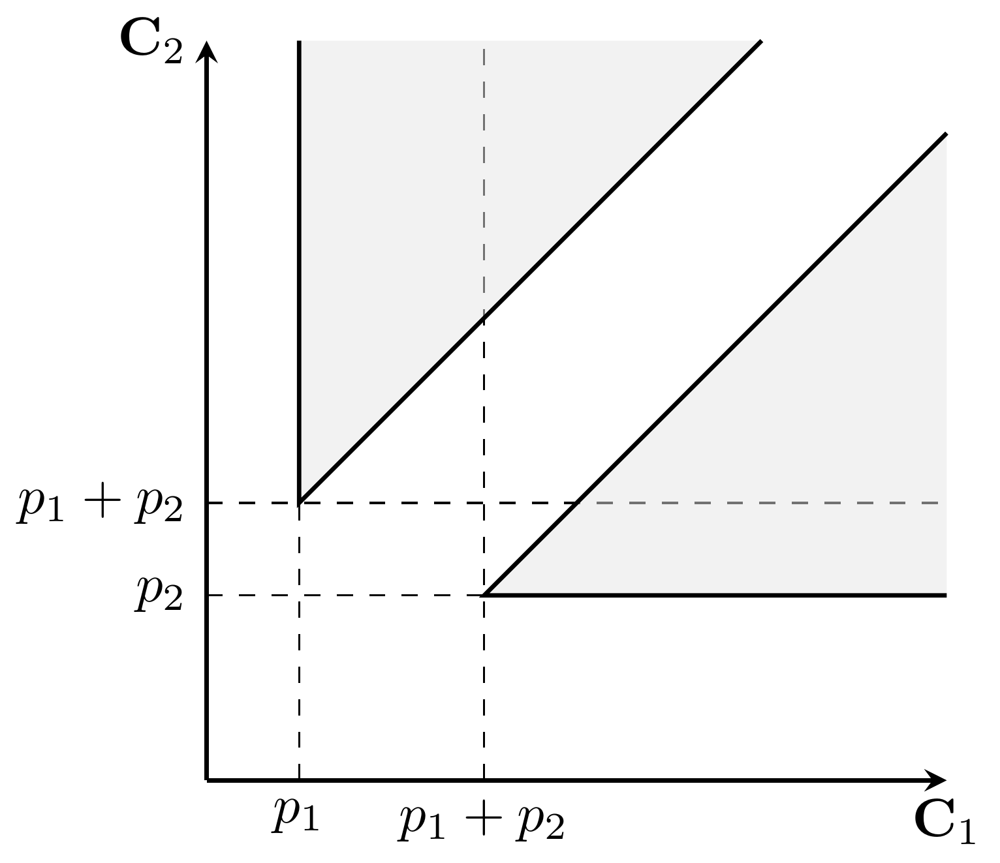

Single Machine Scheduling (MIP)¶
We consider single machine scheduling problems and propose a basic MIP formulation that can be extended for different scenarios. We introduce a class of valid inequalities for the formulation and apply a branch-and-cut solution procedure.
Problem description¶
A set \(\mathcal{J} = \{1,\ldots,n\}\) of jobs must be processed on a single machine without preemption. The processing time of job \(j\) is denoted by \(p_j\).
The polyhedron of the feasible schedules¶
Notice that a solution (i.e., a schedule) can be described solely by specifying the job completion times. For that, let the continous variable \(\mathbf{C}_j\) indicate the completion time of job \(j\). Note that then the start of job \(j\) is \(\mathbf{C}_j - p_j\).
Two conditions are required for feasibility: no job can start earlier than 0, and jobs must not overlap. Thus, the set of feasible solutions is:
For \(n=2\), we can depict the set of feasible solutions (the shaded area):

Note that the feasible region is not connected due to the disjunctive no-overlap constraints. Fortunately, we can optimize over the convex hull. Also note that the feasible region is unbounded, thus, maximizing an objective function \(\sum_{j}w_j\mathbf{C}_j\) with non-negative \(w_j\) coefficients is not a good idea.
MIP formulation¶
We use big-M constraints to linearize the disjunctive constraints.
Variables¶
Let the continuous variable \(\mathbf{C}_j\) denote the completion time of job \(j\), and let the binary variable \(\mathbf{y}_{jk}\) (\(1\leq j < k\leq n\)) indicate whether job \(j\) precedes job \(k\). Note that using the variables \(\mathbf{y}_{jk}\) for \(j>k\) is insufficient as \(\mathbf{y}_{kj} = 1 - \mathbf{y}_{jk}\) holds.
Constraints¶
No job can start earlier than 0:
The jobs cannot overlap:
where \(\operatorname{M}\) is an appropriately big constant (e.g., the sum of processing times).
Branch-and-cut¶
First, we give a complete description of the scheduling polyhedron, then we use those inequalities in a branch-and-cut scheme.
Valid inequalities¶
Structure of a simple scheduling polyhedron
Queyranne, M. (1993). Structure of a simple scheduling polyhedron. Mathematical Programming, 58(1), 263-285.
The convex hull \(\operatorname{conv}(Q)\) of the set of feasible schedules has exactly \(2^n-1\) facets defined by the following parallel inequalities:
or shortly: \(\frac{1}{2}(p^2(S) + p(S)^2) \leq p\mathbf{C}(S)\). Note that the validity of these inequalities can be easily proven by induction.
Let us back to the example (\(n=2\)). For \(S= \{1\}\) and \(S= \{2\}\), the inequalities are \(p_1 \leq \mathbf{C}_1\) and \(p_2 \leq \mathbf{C}_2\), respectively. For \(S= \{1,2\}\), the inequality is \(p_1^2 + p_1p_2 + p_2^2 \leq p_1\mathbf{C}_1 + p_2\mathbf{C}_2\), cf. the equation of the line passing through the points \((p_1,p_1+p_2)\) and \((p_1+p_2,p_2)\).
The parallel inequalities can be generalized for several extensions of the basic problem (e.g., precedence constraints, release dates, parallel machines).
Polyhedral approaches to machine scheduling
Queyranne, M., & Schulz, A. S. (1994). Polyhedral approaches to machine scheduling. Berlin: TU, Fachbereich 3.
Separation¶
Of course, adding all the exponentially many submodular inequalities to the problem is not effective. However, we can separate them dynamically during the global search.
Let \((\bar{C},\bar{y})\) denote the solution of the LP-relaxation of the current branch-and-bound node. We aim to find the most violated inequality, that is, we want to maximize \(\Gamma(S) = g(S) - p\bar{C}(S)\), where \(g(S) = \frac{1}{2} ( p^2(S) + p(S)^2 )\).
Submodular minimization
Note that \(g\) is (strictly) supermodular, that is, \(g(S \cup T) + g(S \cap T) \geq g(S) + g(T)\) holds for all subsets \(S\) and \(T\) of the jobs. Consequently, \(\Gamma\) is also supermodular, thus the separation problem is equivalent to a submodular minimization problem, which can be solved in polynomial time.
The following observation induces an efficient separation procedure. If \(S\subseteq \mathcal{J}\) maximizes \(\Gamma\), then \(k\in S\) if and only if \(\bar{C}_k \leq p(S)\). Therefore, if \(k\in S\), then \(j\in S\) for every job \(j\) such that \(\bar{C}_j \leq \bar{C}_k\).
-
Sort the set of jobs in non-decreasing order of their completion times: \(\bar{C}_{\pi(1)} \leq \ldots \leq \bar{C}_{\pi(n)}\).
-
Initalization:
- the best subset: \(S\gets \emptyset\)
- \(\Gamma(S)\): \(\gamma \gets 0\)
- current subset: \(S'\gets \emptyset\)
- \(\Gamma(S')\): \(\gamma' \gets 0\)
- \(p(S')\): \(\rho \gets 0\)
-
For \(i=1,\ldots,n\):
- \(S'\gets S' \cup \{\pi(i)\}\)
- \(\rho \gets \rho' + p_{\pi(i)}\)
- \(\gamma' \gets \gamma' + p_{\pi(i)}(\rho - \bar{C}_{\pi(i)})\)
- if \(\gamma' > \gamma\), then \(\gamma \gets \gamma'\) and \(S \gets S'\)
Implementation¶
The implementation can be found in singlemachine.py